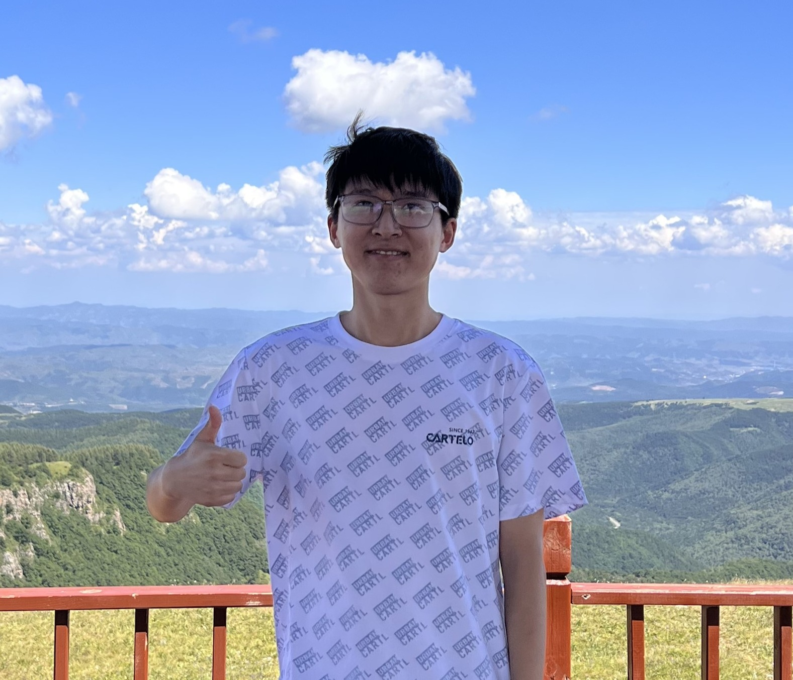

王天锐 · Tianrui Wang
天津大学 / 南洋理工大学 联培博士生 · 语音合成 · 语音理解生成统一建模
研究方向聚焦于语音合成中的细粒度情感控制、基于 LLM 的可控语音合成， 以及语音理解与生成统一大模型。先后在微软亚洲研究院、中国移动研究院、慧言科技、 华为、腾讯等机构进行研究与实习。
关于我
我是王天锐，目前是天津大学智能与计算学部电子信息专业博士生（导师：王龙标教授、党建武教授）， 同时获国家公派留学奖学金赴新加坡南洋理工大学（NTU）联合培养（联培导师：Eng Siong Chng 教授）。 我也长期与上海交通大学跨媒体语言智能实验室（联培导师：陈谐研究员）合作。
研究方向涵盖：语音合成（尤其是细粒度情感与韵律控制）、自监督语音预训练、 语音理解与生成统一大模型、语音增强、鲁棒语音识别等。代表工作包括 ProgRE、VioLA、HGCN、Harmonic Attention、NeurIPS 2025 Spotlight 的 WeScon（Word-level Emotion Control）、 以及 ACL 2026 Oral (Top 5%) 的 CEAEval（Expressive Appropriateness Evaluation）等。
我曾在微软亚洲研究院（自然语言计算组）、中国移动研究院（人工智能与智慧运营部）、 慧言科技、华为 2012 实验室、腾讯（语音大模型算法中心）等机构进行研究与实习， 并入选中国科协青年科技人才培育工程博士生专项计划、中国移动研究院"超星计划"。
教育背景
-
2023.09 – Now
天津大学（Tianjin University），天津
电子信息博士，智能与计算学部。博士导师（联合指导）： 王龙标 教授 (TJU)、 党建武 教授 (TJU)、 Eng Siong Chng 教授 (NTU)、 陈谐 副教授 (SJTU)。 荣誉：中国科协青年科技人才培育工程·博士生专项计划；一等学业奖学金。
-
2025.02 – Now
南洋理工大学（NTU），新加坡 · 访学交流
计算与数据科学学院（CCDS），访问博士生（联合指导，不授予学位）。 联合指导教师： Eng Siong Chng 教授。 由国家公派留学奖学金资助。
-
2022.05 – Now
上海交通大学（SJTU）· 联培研究
跨媒体语言智能实验室（X-LANCE），联培研究（联合指导，不授予学位）。 联合指导教师： 陈谐 副教授。 方向：语音自监督预训练、语音合成、鲁棒语音识别、音频理解生成统一。
-
2020.09 – 2023.07
北京交通大学（BJTU），北京
信息与通信工程硕士，计算机与信息技术学院，导师：朱维彬 教授； 方向：语音增强、语音识别、自监督学习；一等学业奖学金；校级优秀毕业论文
-
2016.09 – 2020.07
中北大学（NUC），太原
物联网工程学士，大数据学院；专业排名 1/137； AI+移动互联校级创新实验室负责人（110+ 人规模）；多项计算机赛事国家一等奖。 本科实验室开源仓库： github.com/android-nuc
科研交流与实习
-
2026.04 – Now
腾讯集团 · 语音大模型算法中心
实习生，方向：音频理解生成统一相关模型研究
-
2026.01 – Now
华为 2012 实验室
校企合作项目学生负责人；方向：细粒度情感可控端到端对话模型研究
-
2023.10 – 2024.02
慧言科技有限公司
语音合成算法实习生；主导中英双语语音合成系统的研发： 数据爬虫、海量数据预处理（15 万小时）、多语言语音合成系统的搭建和训练
-
2022.12 – 2023.07
微软亚洲研究院（MSRA）· 自然语言计算组
语音算法实习生；探索理解生成统一的语音大模型 （语音识别、机器翻译、语音到文本翻译、语音合成）
-
2021.05 – 2022.11
中国移动研究院 · 人工智能与智慧运营部
语音算法实习生；负责流式语音增强与鲁棒语音识别系统的研发， 成功评选"超星计划"（实习生人才计划，设立以来首例）
论文成果
论文按发表/收录年份倒序展示；标题前的 ★ 表示王天锐为第一作者；点击标签可筛选。
开源项目参与
SLAM-LLM (X-LANCE)
X-LANCE 团队开源的大型语音语言模型框架，用于构建和训练语音 LLM。
github.com/X-LANCE/SLAM-LLMWeScon (NeurIPS 2025 Spotlight)
零样本 TTS 中的词级情感与语速控制框架；多轮推理 + 自训练 + 动态情感注意力偏置。
github.com/CCA-Lab/VocalStoryProgRE (TASLP 2024)
渐进式残差提取的自监督语音预训练；逐步解耦音高 / 说话人 / 内容信息，性能超越 WavLM。
github.com/CCA-Lab/ProgREHGCN / HGCN+ (ICASSP 2022)
谐波门控补偿语音增强网络，DNS Challenge 2022 第 5 名；高分辨率谐波积分谱。
github.com/wangtianrui/HGCNRUI_SE
通用语音增强即插即用的精炼底层信息（RUI）框架开源实现。
github.com/caoruitju/RUI_SENutritionMaster
本科国家一等奖作品"营养大师"：基于机器学习的膳食管家。
github.com/wangtianrui/NutritionMaster本科实验室（中北大学）
AI+移动互联校级创新实验室开源组织，本科期间负责并组织。
github.com/android-nuc专业竞赛 & 获奖
- 2024.11ICASSP 2025 LIMMITS'25 Challenge 低资源语音合成比赛 第 2 名（双赛道均第 2）
- 2024.06ISCSLP 2024 ICAGC Challenge 中文情感可控语音合成比赛 第 2 名
- 2023.11Inter Neuromorphic DNS Challenge 第 2 名
- 2022.02ICASSP 2022 Deep Noise Suppression Challenge 第 5 名
- 2021.09入选中国移动研究院"超星计划"（设立以来首例）
- 2019.03Kaggle 房价预测赛 全球前 10%（本科）
- 2018.11华北五省计算机应用大赛 国家一等奖（"营养大师"）
- 2018.09"互联网+"大学生创新创业大赛 国家铜奖（"吾乡"）
- 2018.08全国计算机设计大赛 国家一等奖（"识菜帮"）
- 2018.05"创青春"浙大双创杯全国大学生创业大赛 省级金奖
- 2017.04全国大学生 Google Android 挑战赛 优秀奖
联系方式
- Email: wangtianrui@tju.edu.cn
- WeChat / 手机: 18381077123
- Google Scholar: scholar.google.com/citations?user=eGqo7CYAAAAJ
- GitHub: github.com/wangtianrui